I just found a synonymous term for tongue-twisters, and a shorter one. Anyway, a study says that the hardest tongue-twister is this: "Pad kid poured curd pulled cod.". In the English language, probably because they were from the Massachusetts Institute of Technology. But the article says "it is the world's most difficult." When I read this, I just thought to myself, "you haven't heard of a Polish tongue-twister before."
Polish tongue-twisters are without a doubt insane. Even Poles (at least one of those who I vocally talked with) have difficulties speaking my favorite tongue-twister.
HARD (SOMEHOW EASY)
I'd like to say this set is easy, because that's normally how challenges begin, but if I did I will be lying that this is easy. So, here we go:
ABOUT A BEETLE
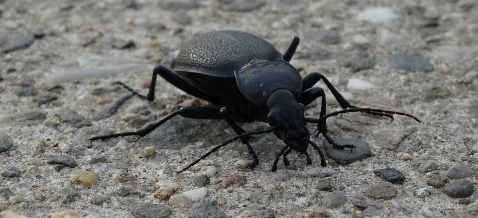
This is level 6 out of 10 for me in terms of difficulty, and is my favorite:
W Szczebrzeszynie chrząszcz brzmi w trzcinie i Szczebrzeszyn z tego słynie. f shch'ebj(e)'eshi(h)ny'e hsho(n)shch bj(e)m'ee f tshch'eeny'e 'ee shch'ebj(e)'eshi(h)n z t'eg'o swi(h)ny'e (In Szczebrzeszyn, the beetle sounds in the reed and Szczebrzeszyn is famous for it.)
When I knew this place exists, I immediately put Szczebrzeszyn to my hope-to-visit-in-seven-years-places list.
YOU BEING HAPPY
This is a 4/10 for me:
Cieszę się że się cieszysz. ch'esh'ew(n) sh'ew(n) j(e)'e sh'ew(n) ch'eshi(h)sh. I'm glad you're happy.
I mean, how come a daily phrase can be that hard to say?
A WORD
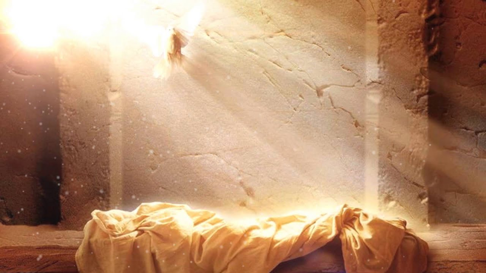
Before this website get banned because of copyright issues, I should acknowledge the YouTube video I watched back at those times when I first heard about these tongue-twisters.
Wskrzesić fsksh'esh'eech Resurrect.
There's alot of these, and I just can't pick a few to show. So I will just leave them unannotated as they should be, except for some images which I think deserves explanations:
Wpadł ptak do wytapetowanego pokoju. fp'adw pt'ak d'o vi(h)t'ap'et'ov'an'eg'o p'ok'oy'oo
(A bird fell into the wallpaper room)
This one is from a YouTube short Sci-Fi film. I don't know if the scene was shot at Zamość or if it is just so similar.
TRUMPETS
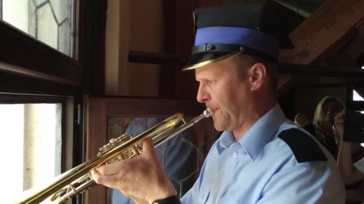
W Ostrogu na rogu trąbili trebacze: tra ra ra. f 'ostr'og'oo n'a r'og'oo tro(n)b'eel'ee tr'eb'ach'e: tr'a r'a r'a
(In Ostrog, on the corner there were trumpets: tra ra ra)
This one is from a YouTube short Sci-Fi film. I don't know if the scene was shot at Zamość or if it is just so similar.
Cesarz czesał cesarzową. ts'es'aj(e) ch'es'aw ts'es'aj(e)'ovo(n) The emperor was combing the empress.
THE WOODPECKER
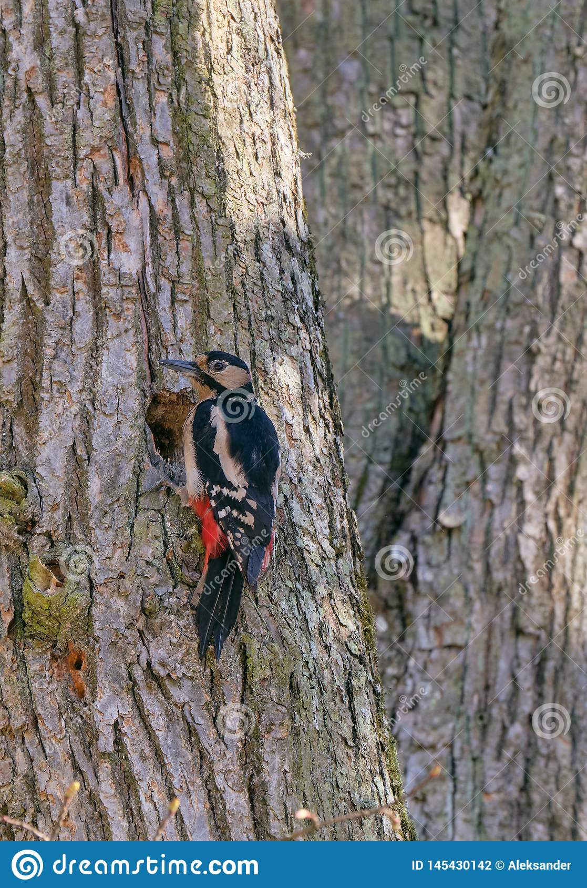
Dzięcioł pień ciął. j'ew(n)ch'ow p'ee'eny cho(n)w. (The woodpecker cut the trunk)
PETER AND THE HOG
Nie pieprz, Pietrze pieprzem wieprza. wtedy szynka będzie lepsza. ny'e p'ee'epsh, p'ee'etsh'e p'ee'epsh'em v'ee'epsh'a. ft'edi(h) shi(h)nk'a b'ew(n)j'e l'epsh'a. Don't pepper the hog, Peter! The ham will be better.
THE GNAWING COW
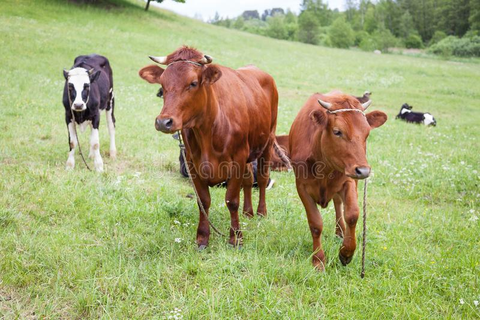
Czarna krowa w kropki bordo gryzie trawę kręcąc mordą. ch'arn'a kr'ov'a f kr'opk'ee b'ord'o gri(h)j(e)'e tr'av'ew(n) kr'ew(n)tso(n)ts m'ordo(n). A black, claret-dotted cow gnaws the grass while shaking its muzzle.
SOMEWHERE IN POLAND
Ołdżychowice Kłodzkie 'owji(h)h'ov'eets'e kw'odzk'ee'e (a town in Poland)
THE MOTHS
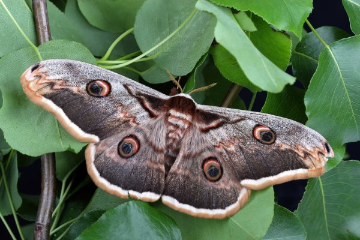
Ćma ćmę ćmi. chm'a chm'ew(n) chm'ee (A moth tries to tease a moth.)
A SHOOTER
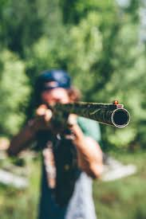
Czego trzeba strzelcowi do zestrzelenia cietrzewia drzemiącego w dżdżysty dzień na drzewie. ch'eg'o tsh'eb'a stsh'elts'ov'ee d'o z'estsh'el'eny'a ch'etsh'ev'ee'a dj(e)'em'eeo(n)ts'eg'o f jji(h)sti(h) j'eny n'a dj(e)'ev'ee'e (What does a shooter need to shoot down a black grouse dozing on a rainy day in a tree)
THE FLEAS (1)
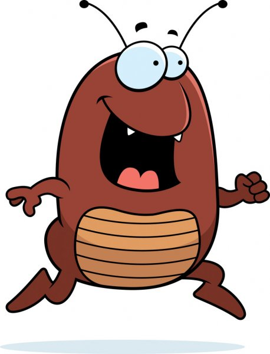
This and the following ones are, to me, average i, difficulty, of course, in the Polish tongue-twisters standards:
Pchła pchłe pchała, pchła płakała. phw'a phw'e ph'aw'a, phw'a pw'ak'aw'a. (the flea was pushing, the flea was crying)
Stół z powyłamywanymi nogami. st'oow z p'ovi(h)w'ami(h)v'ani(h)m'ee n'og'am'ee. table with broken legs
A DRY ROAD
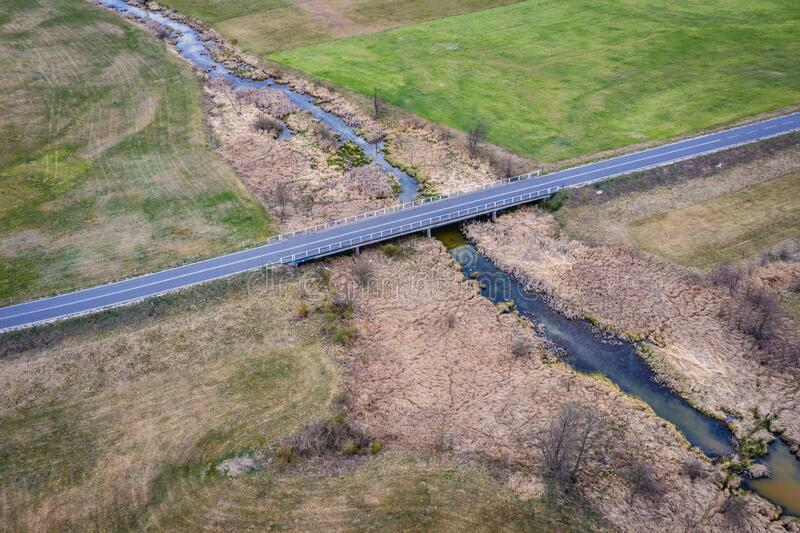
Gdy jest susza, szosa sucha. gdi(h) y'est s'oosh'a, sh'os'a s'ooh'a. When there is drought, the road is dry
THE KING
Król Karol kupił królowej Karolinie korale koloru koralowego. kr'ool k'ar'ol k'oop'eew kr'ool'ov'ey k'ar'ol'eeny'e k'or'al'e k'ol'or'oo k'or'al'ov'eg'o. King Charles bought queen Caroline coral necklace colored as coral
FROM A MOVIE
Grzegorz Brzęczyszczykiewicz gj(e)'eg'oj(e) bj(e)'ew(n)chi(h)shchi(h)k'ee'ev'eech (A name from the movie How I Unleashed World War II)
A POST OFFICE
Koszt poczt w Tczewie. k'osht p'ocht f tch'ev'ee'e. Cost of post office in Tczew.
THE POSTMASTER
Poczmistrz z Tczewa, Rotmistrz z Czchowa. p'ochm'eestsh z tch'ev'a, r'otm'eestsh z chh'ov'a Postmaster from Tczew, Captain from Czchów.
HE'S FROM SWEDEN
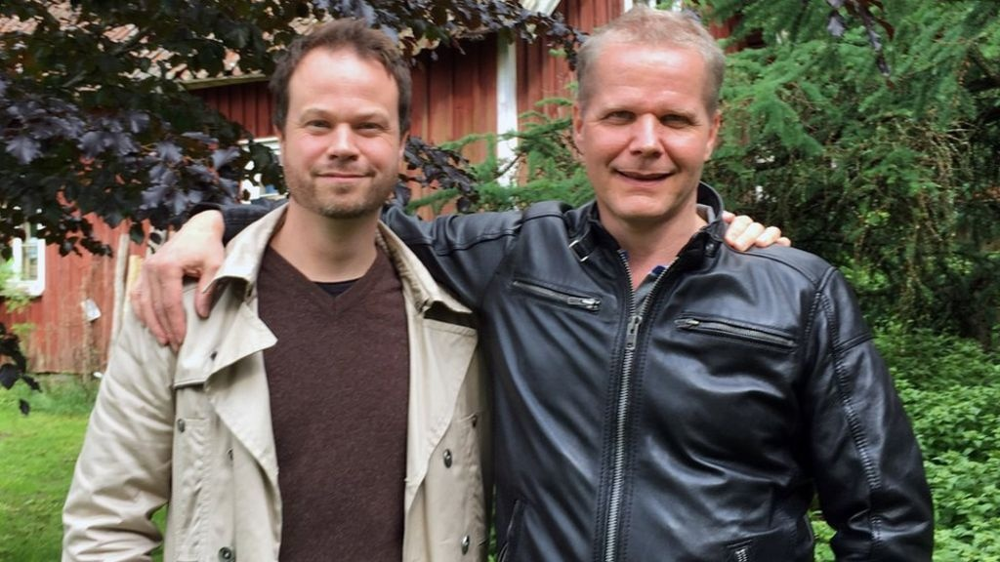
Cóż, że ze Szwecji? ts'ooj(e), j(e)'e z'e shv'etsy'ee? So what, if he's from Sweden?
LYING ON THE TOWER
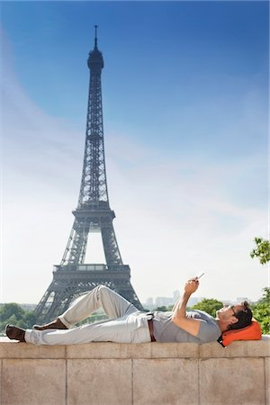
Nie uwierzy, że na wieży leży Jerzy. ny'e 'oov'ee'ej(e)i(h), j(e)'e n'a v'ee'ej(e)i(h) l'ej(e)i(h) y'ej(e)i(h). He will not believe that Jerzy is lying on the tower
A REVOLVER
Ten rewolwer jest wyrewolwerowany. t'en r'ev'olv'er y'est vi(h)r'ev'olv'er'ov'ani(h)./p6> This revolver is broken.
MAMALYGA
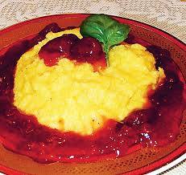
Ma mama mamałygę. m'a m'am'a m'am'awi(h)g'ew(n) My mom has a mamalyga.
TACYTA
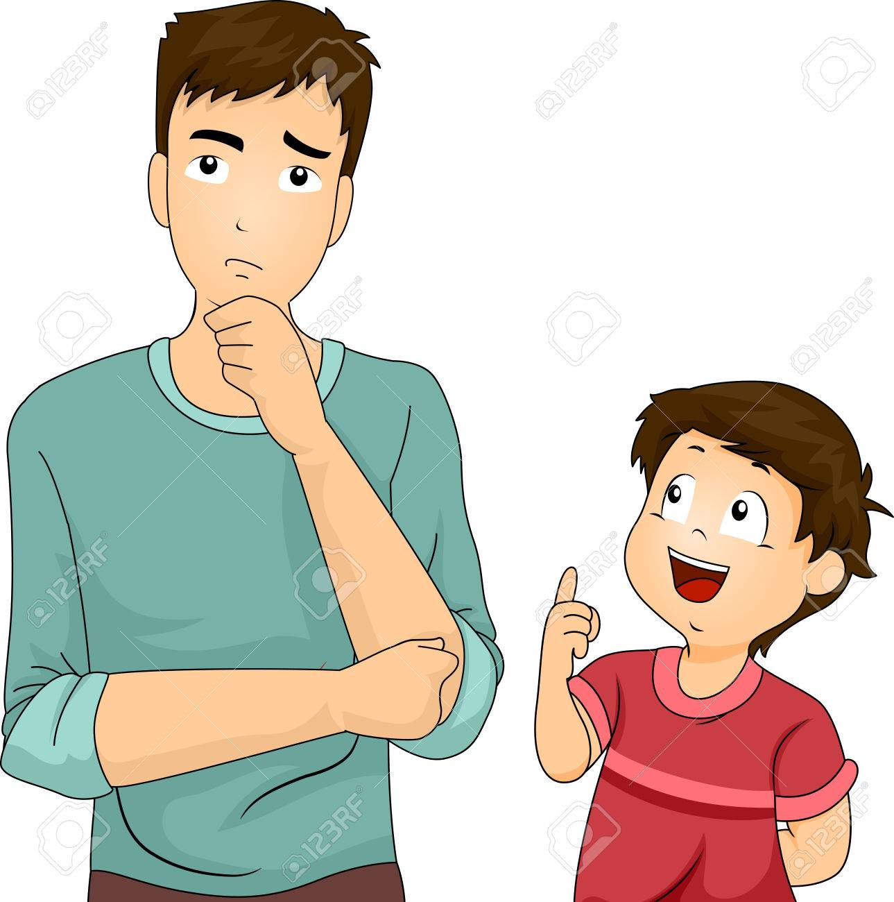
Tata, czy tata czyta cytaty Tacyta? t'at'a, chi(h) t'at'a chi(h)t'a tsi(h)t'ati(h) t'atsi(h)t'a? Dad, are you reading quotations from Tacitus?.
WALKING SASHA
W czasie suszy suchą szosą Sasza szedł. f ch'ash'e s'ooshi(h) s'ooho(n) sh'oso(n) s'ash'a sh'edw In times of drought, Sasza was walking along the dry road
PLATES
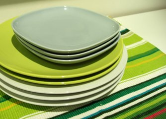
Jerzy nie wierzy, że na wierzy leży sto talerzy. y'ej(e)i(h) ny'e v'ee'ej(e)i(h), j(e)'e n'a v'ee'ej(e)i(h) l'ej(e)i(h) st'o t'al'ej(e)i(h). Jerzy does not believe that there are a hundred plates on the tower
A BROKEN LADDER
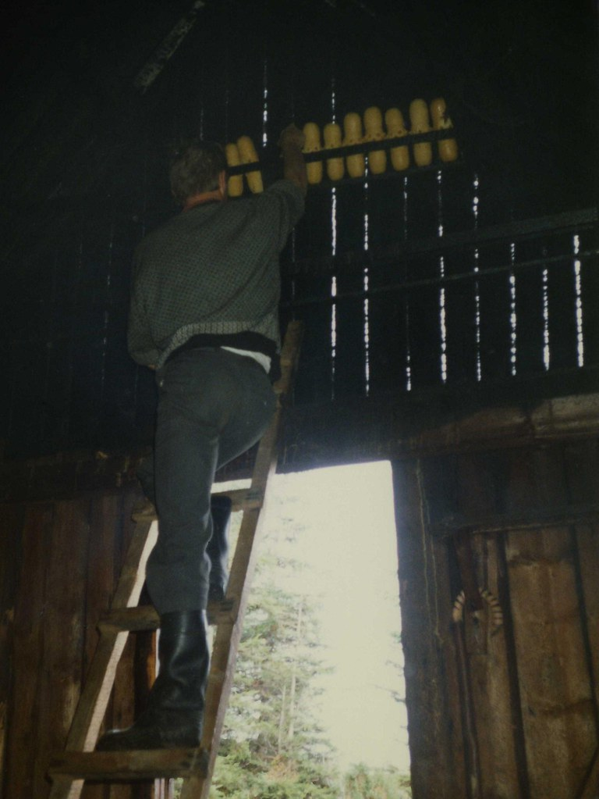
Drabina z powyłamywanami szczeblami dr'ab'een'a z p'ovi(h)w'ami(h)v'an'am'ee shch'ebl'am'ee Ladder with broken rungs
EMANCIPATION
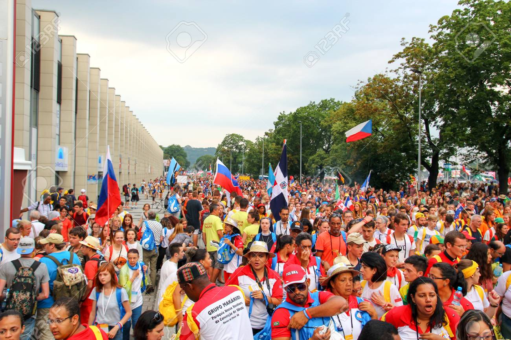
Wyemancypowaliśmi się z rozentuzjamowanego tłumu vi(h)'em'antsi(h)p'ov'al'eeshm'ee sh'ew(n) z r'oz'ent'oozy'am'ov'an'eg'o tw'oom'oo We emancipated ourselves from the enthusiastic crowd
A HEDGEHOG'S NEST
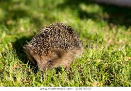
Jerzy nie wierzy, że na wierzy jest gniazdo jeży y'ej(e)i(h) ny'e v'ee'ej(e)i(h), j(e)'e n'a v'ee'ej(e)i(h) y'est gny'azd'o y'ej(e)i(h) Jerzy does not believe that there is a hedgehog's nest on the tower
FRAME
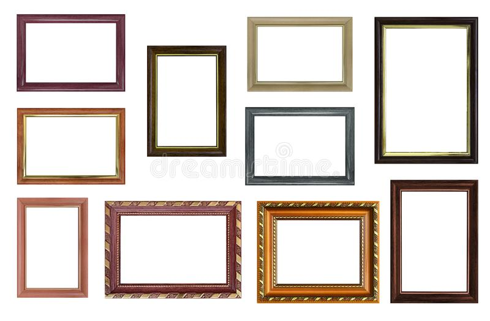
Ta ramka tu ta ramka tam t'a r'amk'a t'oo t'a r'amk'a t'am This frame here, this frame there
INTO THE BOTTLE
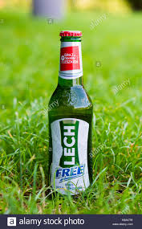
Pójdźże, kiń tę chmurność w głąb flaszy. p'ooyjj(e)'e, k'eeny t'ew(n) hm'oorn'oshch f gwo(n)p fl'ashi(h) Come on, shove that cloudiness down the bottle.
BOXES OF FIGS
Pchnij w tę łódź jeża lub ośm skrzyń fig. phny'eey f t'ew(n) w'ooj y'ej(e)'a l'oop 'oshm skshi(h)ny f'eek Thrust a hedgehog or eight boxes of figs into that boat.
THE FLEAS 1
Powiedziała pchła pchle: pchnij, pchło, pchłę pchłą. Pchła pchneła pchłę pchłą - i po pchle! p'ov'ee'ej'aw'a phw'a phl'e: phny'eey, phw'o, phw'ew(n) phwo(n). phw'a phn'ew'a phw'ew(n) phwo(n) - 'ee p'o phl'e! One flea told another one: flea, push a flea with a flea! So flea pushed flea using another flea - and there is no flea!
CONSTANTINOPLE
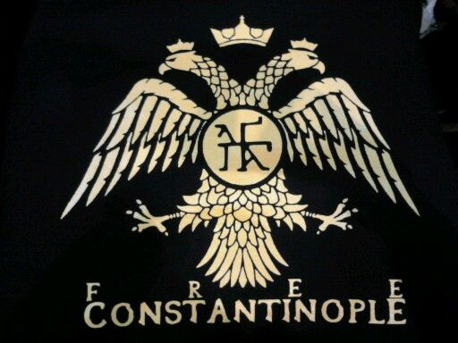
Konstantynopolitańczykiewiczówna. k'onst'anti(h)n'op'ol'eet'anychi(h)k'ee'ev'eech'oofn'a Daughter of a man from Constantinople.
A TROUT
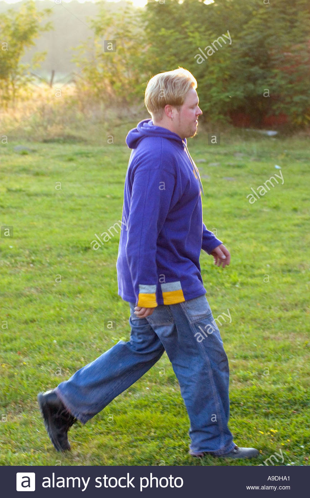
Przyszedł Herbst z pstrągami, słuchał oszczerstw z wstrętem patrząc przez szczelinę w strzelnicy pshi(h)sh'edw h'erbst z pstro(n)g'am'ee, sw'ooh'aw 'oshch'erstf z fstr'ew(n)t'em p'atsho(n)ts psh'ez shch'el'een'ew(n) f stsh'elny'eetsi(h) Herbst came with the trout, he listened to the slander with disgust looking through the crack in the shooting range
QUAILS
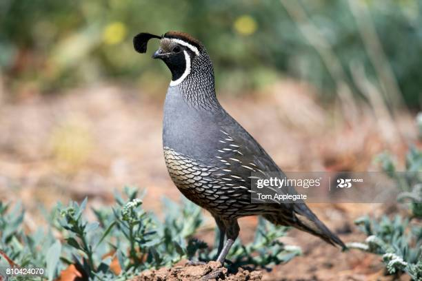
Przeleciały trzy pstre przepiórzyce przez trzy pstre kamienice. psh'el'ech'awi(h) tshi(h) pstr'e psh'ep'ee'ooj(e)i(h)ts'e psh'ez tshi(h) pstr'e k'am'ee'eny'eets'e. Three colorful quail flew through three colorful tenement houses
THE CROWD
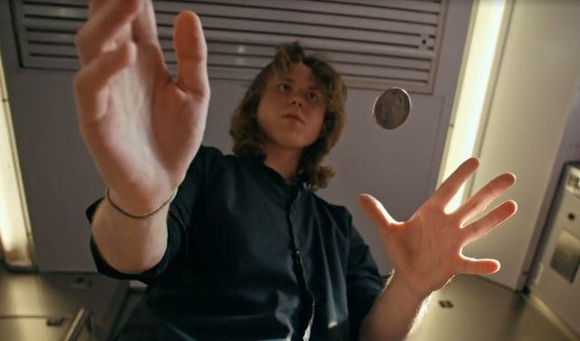
Z rozentuzjazmowanego tłumu wyindywidualizował się niezidentyfikowany prestidigitator, który wyimaginował sobie samounicestwienie z r'oz'ent'oozy'azm'ov'an'eg'o tw'oom'oo vi(h)'eendi(h)v'eed'oo'al'eez'ov'aw sh'ew(n) ny'ej(e)'eed'enti(h)f'eek'ov'ani(h) pr'est'eed'eeg'eet'at'or, kt'oori(h) vi(h)'eem'ag'een'ov'aw s'ob'ee'e s'am'o'oony'eets'estv'ee'eny'e (From the enthusiastic crowd, an unidentified prestidigitator became individualized, who imagined self-destruction)
THE CZECHS
Spod czeskich strzech szło Czechów trzech. sp'od ch'esk'eeh stsh'eh shw'o ch'eh'oof tsh'eh. Three Czechs were walking under the Czech thatch.
NINES
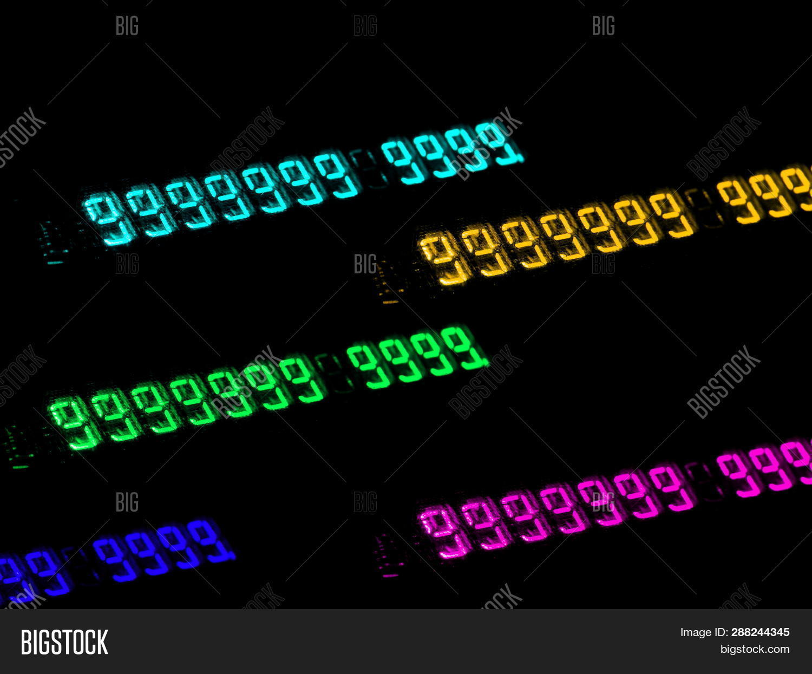
Dziewięćset dziewięćdziesięcio dziewięć tysięcznik. j'ev'ee'ew(n)chs'et j'ev'ee'ew(n)chj'esh'ew(n)ch'o j'ev'ee'ew(n)ch ti(h)sh'ew(n)chny'eek. Nine hundred and ninety-nine thousandths.
THE FLEAS 1
Szłą pchła pchnęła pchłę i pchła płakała, że pchła pchłę popchała. shwo(n) phw'a phn'ew(n)w'a phw'ew(n) 'ee phw'a pw'ak'aw'a, j(e)'e phw'a phw'ew(n) p'oph'aw'a. The walking flea pushed the flea and the flea cried that the flea pushed the flea.
THE FLEAS 2
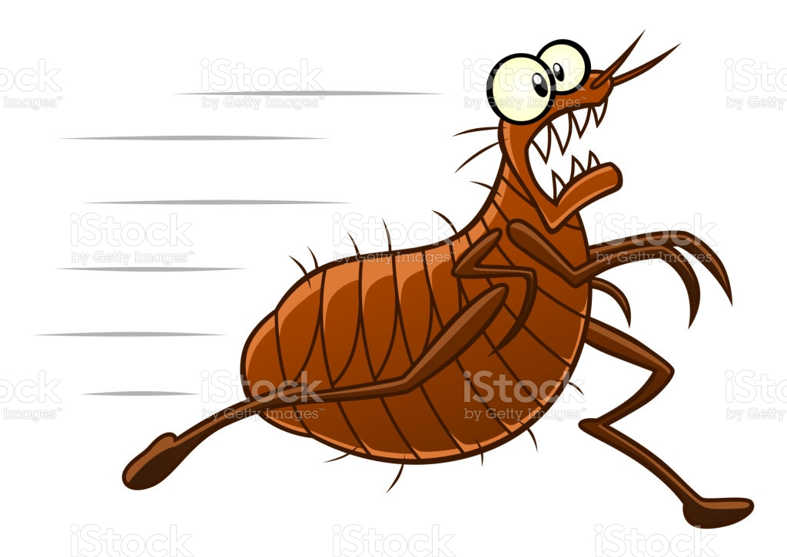
Szły pchły koło wody, pchła pchłę pchła do wody i ta pchłą płakała, że n ją tamta pchłą popchała. shwi(h) phwi(h) k'ow'o v'odi(h), phw'a phw'ew(n) phw'a d'o v'odi(h) 'ee t'a phwo(n) pw'ak'aw'a, j(e)'e n yo(n) t'amt'a phwo(n) p'oph'aw'a. The fleas were walking near the water, the flea was going to the water, and the flea was crying that she was being pushed by that flea.
THE FLEAS 3
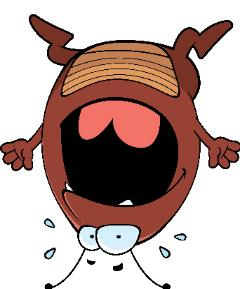
Szły pchły po linie. Pchła pchłę pchałą, a pchała płakałą, że pchła pchłę pchała. shwi(h) phwi(h) p'o l'eeny'e. phw'a phw'ew(n) ph'awo(n), 'a ph'aw'a pw'ak'awo(n), j(e)'e phw'a phw'ew(n) ph'aw'a. The fleas were walking on the rope. A flea was a flea, but a flea was crying that a flea was pushing a flea..